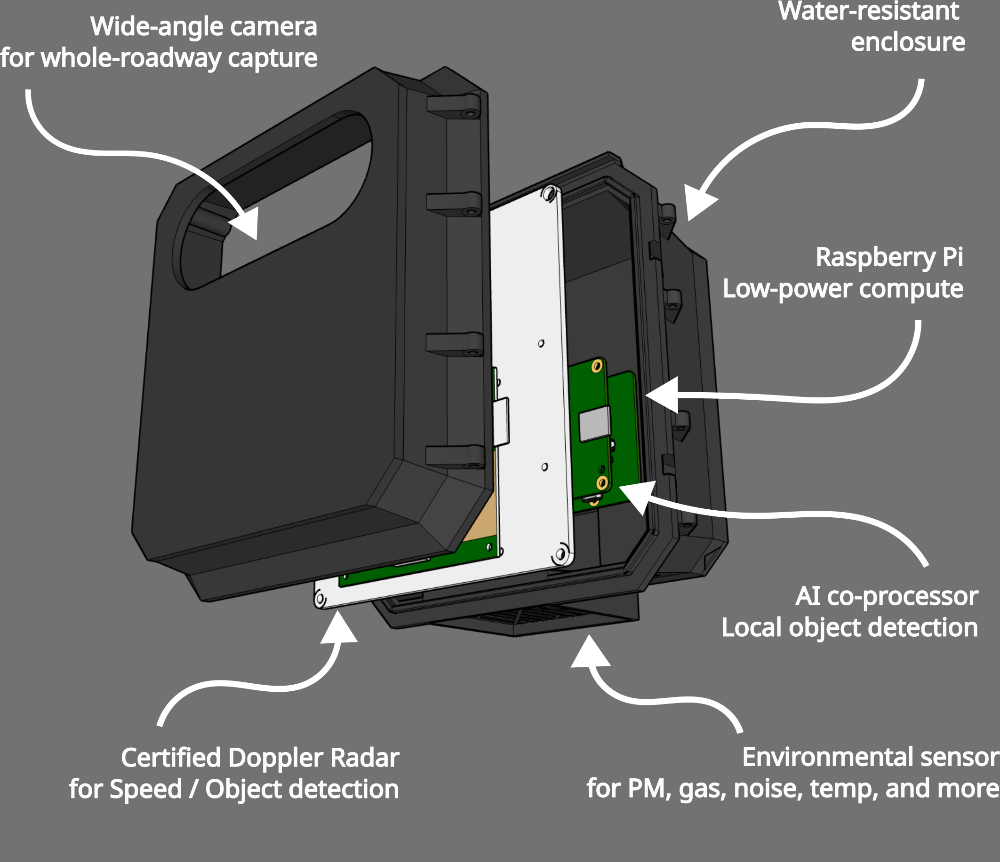
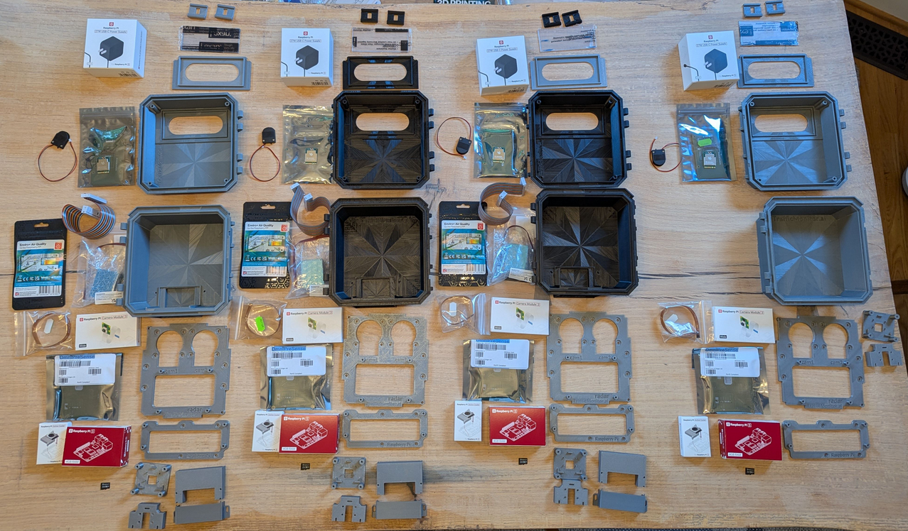
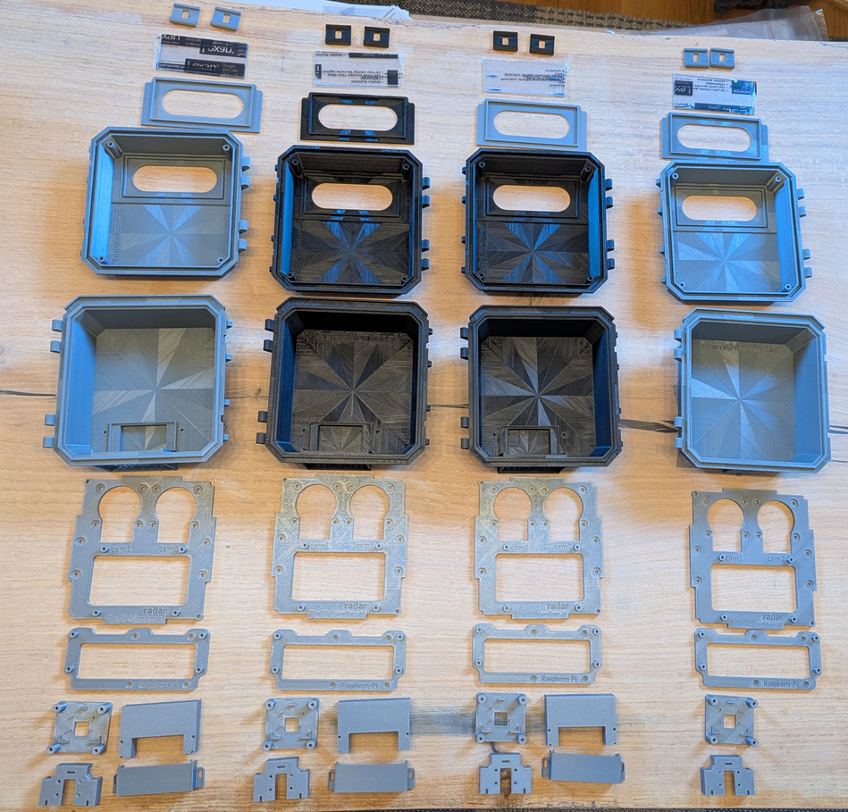
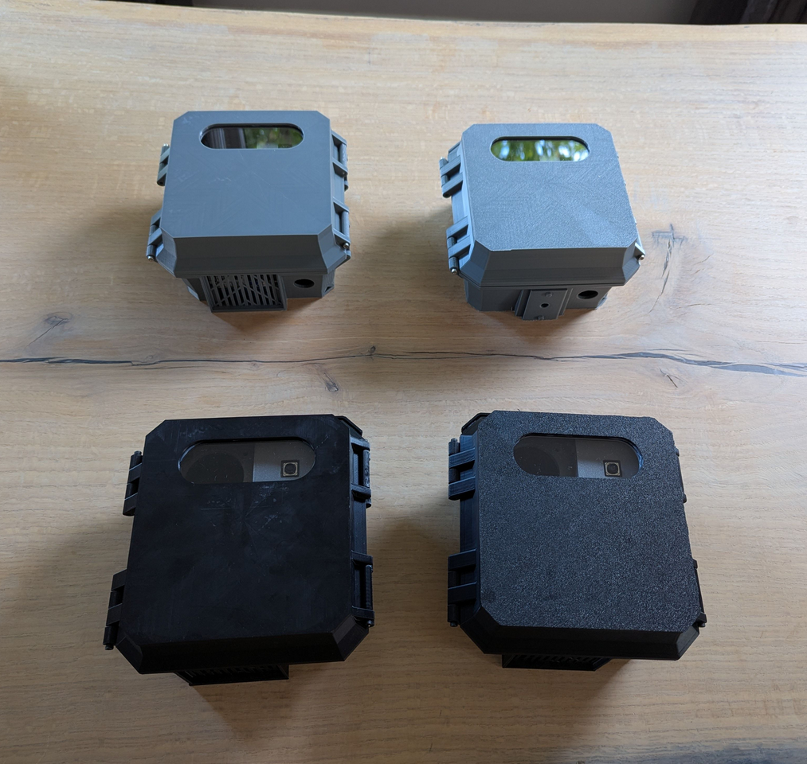

description: The parts for a Traffic Monitor: Raspberry Pi 5, camera, AI accelerator, radar, enclosure, power, and the optional air quality sensor.¶
Hardware¶
The core parts are the Raspberry Pi 5, a microSD card, a camera, and an AI accelerator. A radar adds accurate speeds, and an air quality sensor adds environmental readings. You can swap parts, but the docs and the default settings assume the parts below.
What each combination gives you:
- Camera and AI accelerator: object detection and counts. The lowest cost.
- Add a radar for speeds and the direction of travel. Without a radar, events have no speed or direction.
- Add an air quality sensor for gases, particulate matter, temperature, pressure, humidity, and light.
- Add cameras to watch more directions with the same accelerator. The software supports several cameras and up to four radars, paired in any pattern. See Cameras.

Parts list¶
We are not affiliated with the stores or companies linked here. These are parts contributors have used or tested; if you've tested others, post in the discussions.
- Computer: Raspberry Pi 5, 4 GB or 8 GB
- Power: the official 27 W USB-C power supply
- Cooling: the Raspberry Pi active cooler
- Storage: a microSD card of 32 GB or more, such as the Raspberry Pi SD card or the SanDisk Extreme Pro
- Camera: Raspberry Pi Camera Module 3, wide angle, plus a Raspberry Pi 5 camera cable
- AI accelerator: see AI accelerator
- Radar (recommended): OmniPreSense OPS243-A
- Enclosure: see Enclosure
- Air quality sensor (optional): Enviro+ with the PMS5003 particulate matter sensor and a male-to-female GPIO ribbon cable
- Screws: assorted M3 for the boards and enclosure, M2.5×10 mm for the Raspberry Pi

Computer¶
The Raspberry Pi 5 with 4 GB of memory runs the standard setup. Choose 8 GB if you plan to add sensors or other applications. Add the active cooler; it's inexpensive and prevents throttling on hot days.
Warning
The Raspberry Pi 4 and earlier can't supply enough power over USB for the accelerator and the radar together, which causes resets and dropped readings. Some people have run object detection alone on older models.
Storage¶
A good microSD card of 32 GB or more holds the system and the database. Both the Raspberry Pi SD card and the SanDisk Extreme Pro have been tested. An NVMe (M.2) drive is faster and more durable, and some M.2 HATs hold both a drive and a Coral accelerator.
Power¶
The Raspberry Pi 5 needs a 27 W supply (5 V at 5 A). A weaker supply, such as an older Raspberry Pi adapter, causes resets and throttling. The device itself draws 6 to 14 W while detecting, and every part is powered from the Raspberry Pi.
- Mains: the official 27 W USB-C power supply.
- Power over Ethernet: a PoE HAT such as the Waveshare PoE HAT (F) or Waveshare PoE M.2 HAT+, with a PoE+ source such as the Raspberry Pi PoE+ injector.
- Battery for about a day: a portable power station such as a Jackery Explorer 300, with the official power supply plugged into it. A 300 Wh station lasts about a day.
Longer off-grid use: custom battery and solar
Battery. Use a 12 V or 24 V LiFePO₄ battery and a buck converter that steps it down to 5 V at 5 A. Size the battery from the device's draw of about 13 W: a 12 V, 10 Ah battery (120 Wh) lasts about 9 hours, and 24 hours needs 13 × 24 = 312 Wh, a 12 V battery of about 30 Ah.
Solar. Add a photovoltaic panel and a charge controller to the battery setup. Size the panel for the worst month:
- Look up your daily solar potential. Portland, Oregon, gets about 7.15 kWh/day in summer and 1.42 kWh/day in winter per kW of panel.
- Multiply by the panel size. A 100 W panel in a Portland winter produces about 1.42 × 0.1 = 142 Wh per day.
- Allow for the controller. A PWM controller passes about 80%, so 142 × 0.8 = 113 Wh per day.
- Compare with the 312 Wh the device uses per day. A 100 W panel isn't enough; a Portland winter needs about 300 W of panel.
Real output depends on panel angle, cloud, shade from trees, and snow. This setup is a prototype, not a tested product.
Cameras¶
The Raspberry Pi Camera Module 3 in its wide-angle version is the tested camera. It needs the Raspberry Pi 5 camera cable, sold separately. The Raspberry Pi Global Shutter camera has been tested too, for faster motion or a custom lens, with the same cable. It needs camera stream settings that match its sensor, because the defaults are for Camera Module 3. They're in /var/lib/go2rtc/go2rtc.yaml, which every update replaces, so redo them after updating.
The Raspberry Pi 5 has two camera connectors, so it can take two Raspberry Pi cameras. Network cameras also work; see Frigate's camera recommendations. Choose one that streams H.265 (HEVC), which the Raspberry Pi 5 decodes in hardware. H.264 works with software decoding but costs CPU, so keep to one or two such cameras.
AI accelerator¶
An AI accelerator runs the object detection model at over 100 frames per second with a few milliseconds per inference, enough for several cameras. Without one, Frigate detects on the CPU, which is slower and misses more objects on a busy road, so an accelerator is recommended for any deployment with a camera.
- Recommended: Raspberry Pi AI HAT+ with the Hailo-8 or Hailo-8L.
- Older: Coral USB Accelerator. It has become expensive and hard to find.
- Older: Coral M.2 Accelerator B+M key (not the A+E key) on the Raspberry Pi M.2 HAT+.
Frigate's supported detectors lists other options. The installer detects the Coral and Hailo accelerators and configures Frigate for whichever it finds.
Radar¶
The OmniPreSense OPS243-A Doppler radar measures speed and direction up to about 100 m away and is certified with the same tests as law-enforcement speed radars. It connects over USB.
Air quality sensor¶
The Enviro+ board with the PMS5003 particulate matter sensor measures gases, particulates, temperature, pressure, humidity, and light. It plugs into the Raspberry Pi's GPIO header through a male-to-female ribbon cable, which reaches the sensor's place in the enclosure. Air quality sensor covers the software.
Enclosure¶
-
Print it. The 3D-printable enclosure is open source at greendormer/tm-enclosure-3d, with a parts list.


-
Adapt a junction box. A waterproof electrical box of about 9 × 7 × 4 inches, such as the TICONN IP67 ABS enclosure, holds the parts, the camera, and the radar with some modification.